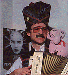

Sinclair's own plans for a new Super Spectrum, codenamed 'Loki', were sadly never realised. Following the lead from Commodore's astonishing Amiga computer, Sinclair planned to base his new machine around custom chips to create a next generation of 8-bit computer. An updated version of the Z80 processor would have raced along at 7Mhz (the same as the Amiga and twice that of the old Spectrum), memory would be 128K expandable up to a dizzying 1Mb, and the number of colours would have soared from 8 to 256. Added to this impressive package would have been Waveform synthesiser sound, dedicated graphics hardware and a built-in tape/disk drive. An intended price of just £200 would have surely made it a genuine rival to the new 16-bit computers.
It was a sorry end for a great British innovator, who had virtually invented the UK home computer industry - almost by accident. Computers had never been his great passion but they had provided the money to work on other pet projects. He could have invested that money in developing a succession of ever-improving machines and eventually become a major player in the modern computer industry, but it was not to be. He would later describe his home computers as his proudest achievement, although at the time their long-term significance was difficult to assess.
The games industry that Sinclair left behind was still very much alive and well in 1986, the market became dominated by a handful of large software houses. The tendency in 1985 for companies to copy the style of a successful game had become habitual, while the battle for arcade conversion licenses had turned into a feeding frenzy. It was beginning to look as though programming ability had far exceeded creative propensity.

Mel Croucher, a leading figure in the world of home computers at the time, was interviewed in Crash of April 1986. His views reflect the exasperation of many people:
"The hardware gets better. The software gets better. There's a lot of good software around at the moment; it's never been so good in fact but things move on. It's derivative, it's all derivative. The programming is superb now but the concepts are all stale. It's all very well to sign mega deals and licence various things - either buying licences or selling licences - but at the end of the day we are down to the programmer, who in turn relies on the concept. It's great to say 'I've come up with the greatest thing since sliced bread', but sliced bread goes off after a day."
Software houses tend to follow each other's lead - once one karate game has come onto the market, several versions follow. For each 'new' type of game, several clones follow. Arcade conversions are becoming increasingly important in the list of new releases. It's all derivative and lacking in originality according to Mr Croucher...
"Last year I was in the company of a very large and well-known software house wherein the man was dressed in a grey three piece suit and looking worried, and his PR boys and girls were all very well turned out, plying people with this, that, and the other, and the structure was a wonderful pack of cards. Who wrote the programs? In they came, like the seven dwarves. These little children came in and were given a shandy or something. The whole company stood or fell on what these little kids could turn out. When I say kids, I mean kids - we were talking to fourteen or fifteen year old programmers. They can only be derivative - it is impossible for them to come up with an original idea, absolutely impossible - for even if they do, they haven't got the vocabulary to express it."
Despite this gloomy assessment of the situation, games continued to sell. Many younger computer owners were experiencing their first taste of gaming and they knew no better than conversions or rip-offs. Yet another scrolling shooter based on a film may have made the eyes of a Spectrum veteran roll, but for a 12-year old keen to kill some alien scum, it probably represented everything he had come to expect from one of the big software houses.
Such was the urgency to force as many titles as possible onto the market, there were bound to be problems. "As time went on, it ended up being too much like a production line," says Jonathon Smith, one of Ocean's senior programmers. "Three or four months allotted for each project didn't leave much time for development. That's why all those Ocean games look and play the same. I think Terra Cresta took about a month to write, and it shows!"
With so much emphasis being placed on producing safe, mainstream titles, little shelf space was being offered to more demanding games like Lords of Midnight, Elite or say a Level 9 adventure. Their lack of exposure was turning them into a minority affair and new titles of a similar type and quality were simply not being produced.
The niche in the market which had previously been held by small, innovative firms was now dominated by the budget houses, primarily in the form of Mastertronic and a new company that would make a huge impact on the computer scene for years to come, Codemasters.
Imagine and Elite spent the year buying up the conversion licences for Konami and Capcom games respectively. Imagine's coin-ops included Mikie, Green Beret, Konami Golf, Legend of Kage and Ping Pong. Elite offered up 1942, Bomb Jack, Ghosts n' Goblins, Paperboy, Commando and Space Harrier.
Ocean, who owned and ran Imagine, concentrated on tie-ins rather than conversions, coming up with Batman, Cobra, Highlander, Knight Rider, Miami Vice, Platoon and Transformers to name but a few.

Some classy work was still emerging. PSS launched the fantasy role-playing game Swords & Sorcery. It had been greatly delayed, but offered groundbreaking features for the time: a first person perspective 3D dungeon and artificial intelligence routines.
Ultimate's Gunfright once again used isometric 3D graphics, causing more grumbles about game design going stale, but it was still extremely playable. Gremlin's West Bank, an original shooting game, tested the reflexes, while Activision produced an atmospheric, attractive adventure in Mindshadow. Other top quality adventures to appear were Level 9's Price of Magick and Worm in Paradise, plus Melbourne House's Lord of the Rings. Arguably, they would prove to be the last great adventure titles to appear on the Spectrum.
That industry critic Mel Croucher produced ID, an eccentric, text-based diversion in which the player had to coax and cajole a frightened personality hiding in the computer into revealing details of its past. Another unusual game that proved popular was Domark's Splitting Images, based on the old sliding-pieces puzzle concept.
In terms of cockpit games, Realtime's Starstrike II took the plaudits with its sensational 3D graphics. It was a reworking of the old Star Wars idea, but never had it been done this well before.

On the frontline of strategy games were two strong titles from Firebird. Rebelstar put you in control of a squad of troops breaking into a lunar base, while Chaos was a fantasy-themed Dungeons & Dragons style game. Julian Gollop, who wrote both titles, went on to create the acclaimed PC series, X-Com.
So there you have it, 1982 to 1986. I'm sure that some of you will argue the case for the later years on the basis of great games like Driller, Head Over Heels and The Sentinel, but they were in a strict minority. Despite my fondness for some later releases, I feel that 1986 marked the end of a golden age for the Spectrum for a number of reasons.
Firstly, this was the year that Sir Clive Sinclair left the home computer industry. This in itself represented the end of an era. Under the control of a consumer electronics company like Amstrad, the unique, quirky nature of Sinclair's products would be lost forever. Without Uncle Clive on the scene, the industry lost an identifiable icon, who, for all his faults, was responsible for the computers we owned and loved. Regardless of his business acumen, the hairy form of Alan Sugar was hardly as endearing as Sinclair, the mad inventor.
Secondly, this was the year that Ultimate, for so long the leading light of the British software industry, ended their involvement with the Spectrum, feeling that they had achieved everything they could. They would resurface as Rare and continue their superlative track record as a Nintendo third party programming house. The fact that such an inspirational and innovative company chose to leave at this point must say something about the state of the Spectrum scene by 1986. Ultimate represented the complete antithesis of a firm like Ocean, who churned out countless licenses and tie-ins, all massively hyped and promoted at computer fairs from a three-storey fortress of commercialism. Ultimate released a comparative handful of titles, they issued only one interview in their time (in their post-Ultimate guise), never appeared at a computer fair (bar one early exception), never made press releases and produced games of the most exquisite quality that generated a degree of hype and anticipation that other companies couldn't hope to match. Their decision to leave the Spectrum truly saw a creative light snuffed out.
My final reason is perhaps the most important. 1986 saw a shift in the balance of power within the games industry that would change it forever. By the end of the year, a few large software houses completely dominated the scene, commanding greater and greater shelf space. The smaller companies who had often represented a source of inspiration had been squeezed out of the market and most new labels were merely offshoots of the established players. The companies that had been around since the early years (sometimes even since the days of the ZX81) such as Quicksilva and Bug Byte had been bought out or had gone bust. That said, the failure of many smaller outfits was due as much to poor management as to the nature of the industry in which they worked.
You only had to open a copy of Crash in 1984 to experience the excited buzz that surrounded the games scene. Things were changing at such pace that Spectrum owners were in a state of constant awe. In fact, it's hard to appreciate in today's age, where we are so blasé about new technology, just how huge the little steps seemed. It was thrilling the way in which our expectations of what this little black box could do were confounded again and again. And it wasn't just about the graphics either. After a staple diet of bland, derivative titles in the arcades, the early Spectrum user was desperate for imagination, sublety and skill from their games; not the just sort of quick-fire action that keeps kids pumping coins into a machine, but original, involving gameplay. Within three or four years it was a question of how long until that American TV show was mutated into a scrolling shooter, or until that arcade game could be converted. Do you see the difference?